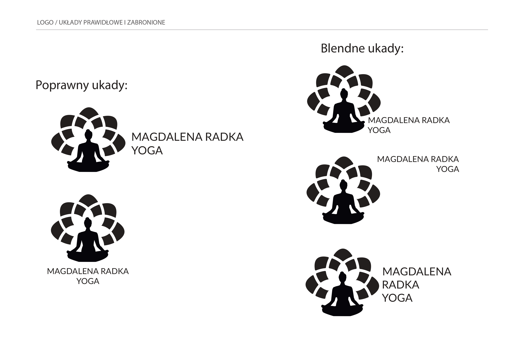
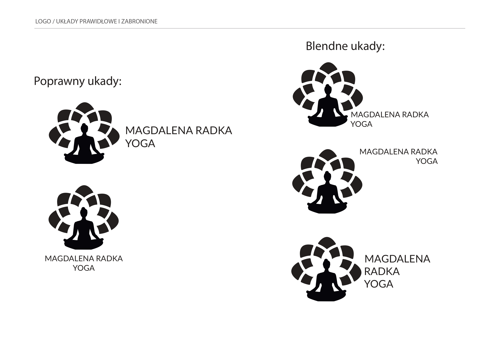

Magdalena Radka Yoga
Była to część edukacji w szkole SOWA EDU, gdzie projektowałem logo i identyfikację brandu dla szkoły jogi mojej mamy. Tworzenie logo odzwierciedlało esencję jogi - harmonię, spokój i równowagę. Byłem zainspirowany promowaniem tego pięknego miejsca, wspierając mamę w jej pasji i misji dzielenia się jogą z innymi. Widząc efekty końcowe, czułem dumę i wiarę, że szkoła jogi przyciągnie więcej uczniów, pomagając im odnaleźć wewnętrzną harmonię. Początek dnia malował się obiecująco, a ja byłam gotowy podjąć każde wyzwanie, jakie przyniesie.